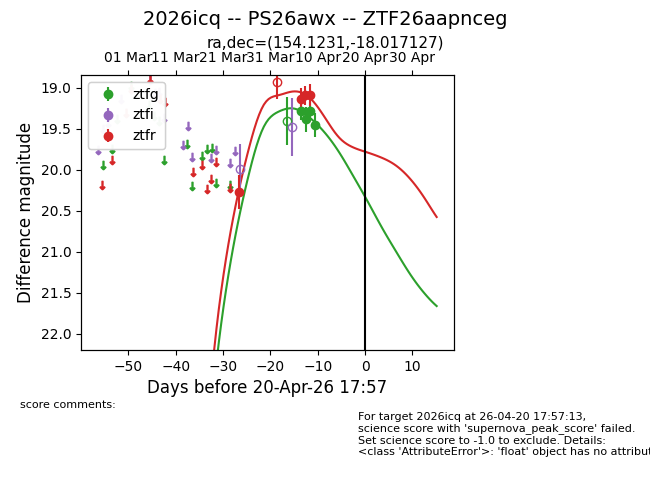
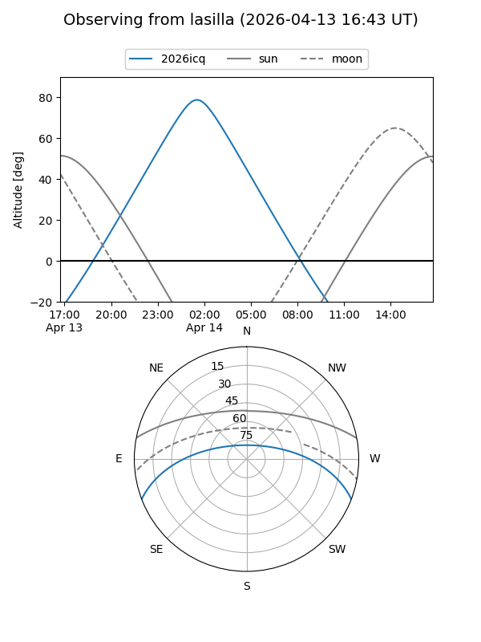
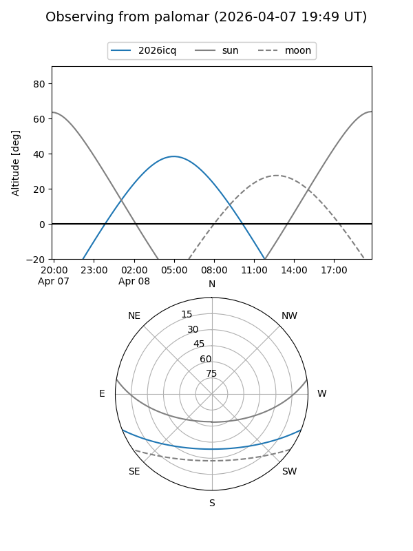
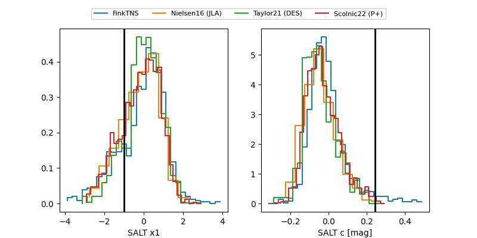

2026icq
Target 2026icq at 2026-04-20 18:06
Aliases and brokers:
FINK: link
Lasair: link
ALeRCE: link
TNS: link
YSE: link
alt names
ZTF26aapnceg (ztf,fink_ztf)
2026icq (tns,yse)
PS26awx (panstarrs)
Coordinates:
equatorial (ra, dec) = 154.1231,-18.01713
equatorial (HMS+DMS) = 10:16:29.55,-18:01:01.66
galactic (l, b) = (258.8071,+31.27474)
Flags:
Photometry:
last ztfg=19.45, ztfr=19.09
4 ztfg, 4 ztfr detections
Lightcurve

Visibility


Additional plots
